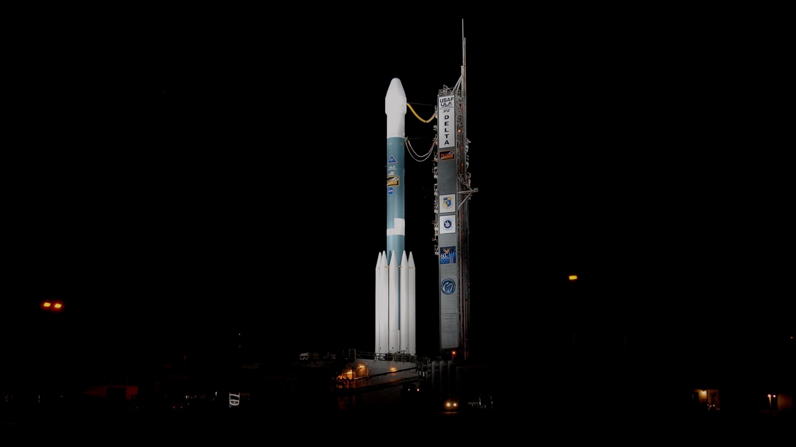
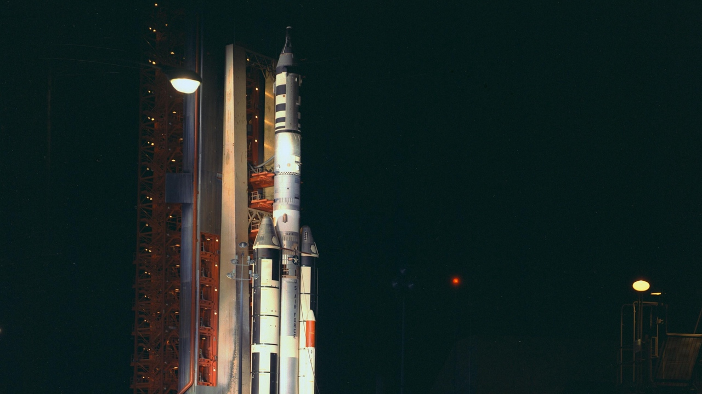
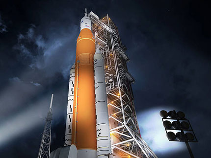
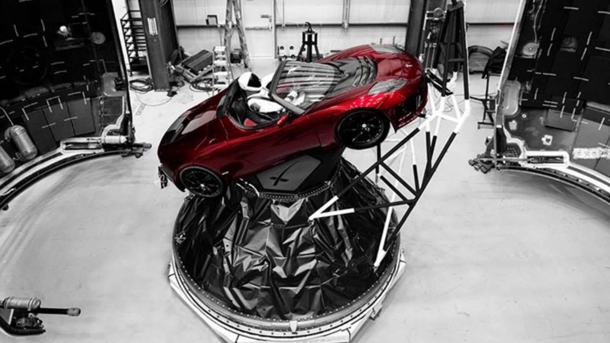

Choose Your Spaceship
Here you can choose your preffered spaceship.
We provide you with 4 different Spaceships to
choose from, each with it's unique design and specialties.
Spaceship: MR-X332
Rocket MR-X332 can fly you to the moon and back with no problem. It has a height of 350 meters. It provides it's users a balancing area so that you don't have the difference of gravity in space while inside. It has very comfortable sleeping beds and also a relaxing area where you can go and enjoy the view of space from within. However it is not possible to fly long distances outside the spaceship because it only provides special equipment and not special machines to do so.
Spaceship: MP-2Y45
Rocket MP-2Y45 is capable of flying until Mars if you wanted to and bring you back safely. It has a height of 400 meters. It provides it's users a balancing area so that you don't have the difference of gravity in space while inside. It is on of our most luxurious rocket because of it's cozy beds. It offers a huge relaxing area with big windows to enjoy the breathtaking view of space from inside. If you wish to discover space further then what the route of the spaceship you can hop into a small cabin and make a tour by yourself. It provides you with special equipment to fly in space and enjoy your time there without any danger.
Spaceship: QR-22Z4
Rocket QR-22Z4 is capable of flying the longest distance out of all 4 Spaceships. It can fit up to 15 people on board.The ship is 450 meters in height. It provides it's users a balancing area so that you don't have the difference of gravity in space while inside. You are aslo offered with a spectacular view of space from every room and from the main relaxing area. It is also possible to take a small cabin and ride through space on your own if you wish for a couple of hours. We provide you with special equipment to keep you safe at all times.
Spaceship: Tesla
Yes, you see it right. You can go to space with a Tesla. As you can imagine, it's not the most spaciuos spaceship that we have. But you can go and "drive" around space as much as you want until you are tired of sitting. In that case you can just unbelt and start flying out and stretch yourself. If you worry about going away too far don't worry, you will be buckled with strings attached to the car so that you don't lose one another. You will not be able to travel too much through space because of food limitations. But , in case you want to stay longer, you can keep in touch with the other spaceships which might take you on board if they have enough space.